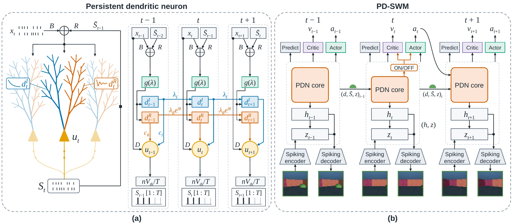
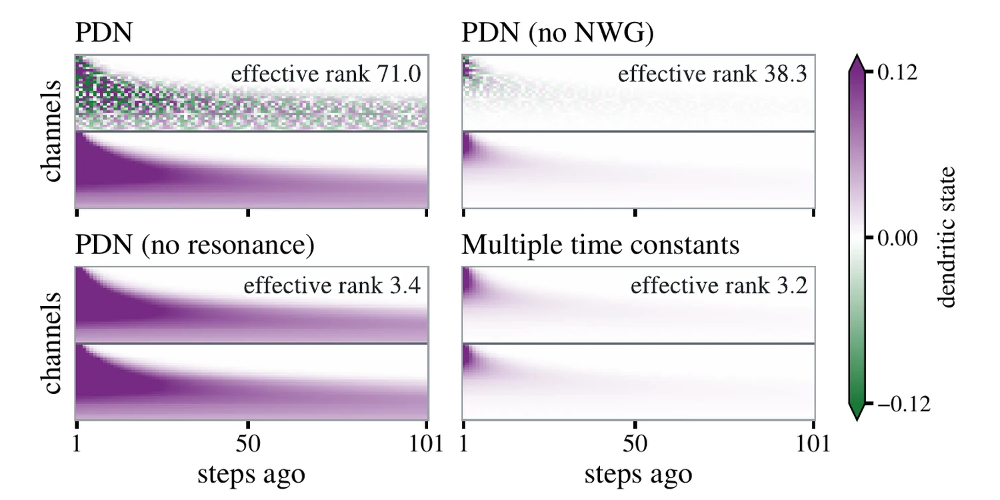
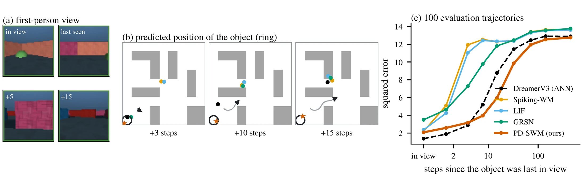
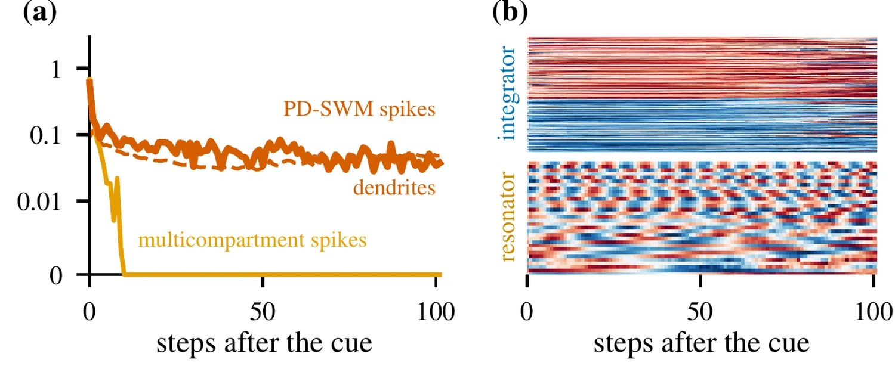

Spiking World Models with Persistent Dendritic Neurons
resonant branch
SNN world models struggle to recall cues from the distant past. PD-SWM keeps its memory in dendrites that persist across steps and reads it out as spikes at every step, so firing leaves the memory intact.
What PD-SWM can do
On BSuite memory length, PD-SWM succeeds at every length from 8 to 101 steps, the only model to do so. DreamerV3 stops at 51 steps under the same training budget.
On POPGym RepeatPrevious Medium, 72% of PD-SWM's answers name the card from 32 steps earlier. All other models, including the ANN world models DreamerV3 and R2I, stay close to chance.
Predicting walker walk 45 frames ahead from the actions alone, PD-SWM has the lowest mean pixel error of all models, while its control returns stay close to those of DreamerV3.
In a first-person 3D maze, PD-SWM locates objects that have left the view more accurately than the spiking baselines and DreamerV3.
Read the abstract
Spiking neural network (SNN) world models approach the control performance of artificial neural network (ANN) world models, but they struggle to recall cues from the distant past. Our analysis traces this to two core problems of existing spiking neurons. In the evolution of the state over time, distant inputs leave traces that are too weak, and the times at which inputs occurred are hard to tell apart. In the spike readout, resetting the state at firing overwrites the stored memory.
Inspired by the internal neural dynamics of biological dendrites, we propose PD-SWM, an SNN world model based on Persistent Dendritic Neurons (PDNs). Persistent Dendritic Memory (PDM) stores information in damped oscillating channels with diverse retention times and frequencies, and their phases mark when inputs occurred. A Normalized Write Gain (NWG) keeps distant traces strong enough to drive the readout. Stateless Somatic Readout (SSR) integrates the dendritic memory with the current input at every step and fires spikes without resetting the dendrites.
On BSuite, Memory Maze and other partially observable benchmarks, PD-SWM surpasses other SNN world models in long-term memory and ANN world models in decisions that depend on long histories, while keeping its control performance. These results show that suitable internal dynamics of spiking neurons give SNN world models long-term memory.
Why SNN world models forget distant cues
A recurrent world model carries everything it knows from one step to the next through its sequence model. In an SNN world model the neurons of that sequence model pass only binary spikes to each other, so a cue survives only inside their internal state. Two properties of existing spiking neurons limit how long it survives.
Distant traces are weak and carry no time
To keep a cue for steps, a leaky neuron needs a time constant , which makes its write gain small. For any , the trace left after steps stays below . A real trace also has only a magnitude, so an early strong input and a recent weak input can leave the same trace.
Firing overwrites the memory
The world model reads its state at every step, so the neurons that hold the cue must fire. A hard reset clears the stored trace at the first spike. A soft reset subtracts the threshold at every spike, so the membrane potential becomes the trace of the inputs minus the trace of the spikes, and the memory changes with every readout.
How much of a cue is left after steps?
interactivePersistent Dendritic Neurons
In cortical pyramidal neurons, the apical dendrites persistently encode task rules inferred from past feedback, and the soma encodes the current sensory input. A PDN follows this division of labor: its dendrites store the memory, and its soma fires the spikes. PD-SWM keeps the recurrent world model of DreamerV3, builds all its networks from spiking neurons, and forms its sequence model from PDNs.

Persistent Dendritic Memory
Each dendritic channel is a damped oscillator. An input from steps back leaves the trace : its magnitude sets how long it is kept, and its phase marks how long ago it occurred. Channels at different frequencies together separate intervals that one frequency cannot. Firing never resets the dendrites.
Normalized Write Gain
Plateau potentials in dendrites last long and stay strong enough to make the soma fire. NWG gives every channel unit energy however long its retention, so a channel with keeps times the limit of a leaky write after steps. At inference the gain is a constant.
Stateless Somatic Readout
At every step the soma integrates the dendrites with the current input into and fires against rising thresholds. The soma has no state to reset, so the cue stays in the dendrites however often the neuron fires.
Write one cue into a neuron
interactiveEight dendritic channels receive a single cue at step 0. Each row draws the real part of one channel, the clock shows the phase of the four resonant channels, and the bottom row shows the spikes of the soma. Switch a design off to see what it does.

Memory in decisions, prediction and control
The spiking models share one world model of the size of DreamerV3-S and differ only in the sequence model. DreamerV3 uses the same architecture with a GRU core and no spikes, and R2I is an ANN world model designed for memory tasks. Within a benchmark, all models use the same hyperparameters, training budget and evaluation.
How far back can each model recall a cue?
Benchmark results
| BSuite memory length | RepeatPrevious ↑ | Memory Maze 9×9 | Walker walk ↑ | ||||||||||
|---|---|---|---|---|---|---|---|---|---|---|---|---|---|
| Method | 8 | 16 | 32 | 64 | 51† | 71† | 101† | Easy | Medium | Object MSE ↓ | Walls % ↑ | Proprio. | Pixels |
On BSuite, ✓ means that the evaluation return reaches 0.9 within the budget in at least two of three seeds (for R2I, in the median of its 10 runs), and – means not reported. † uses the lengths and budget of R2I. RepeatPrevious reports the mean return of the final agent over 512 episodes, and chance is −0.5. On Memory Maze, a constant predictor reaches an object MSE of 24.0 and a wall accuracy of 80.8%. Bold marks the best value per column.
Imagination without observations
Spatial memory in first-person vision

World model probes
| Cue recall | RepeatPrevious | ||||||
|---|---|---|---|---|---|---|---|
| Method | L=8 | 16 | 32 | 64 | k=4 | 32 | 64* |
AUC of reward predictions that depend on the past, for world models trained on data from a random policy; 0.5 means no memory. *Held out as a test. Only PD-SWM learns to repeat the card from exactly 32 and 64 steps earlier.
Ablations
| Design kept | Cue recall | Rep. | ||||
|---|---|---|---|---|---|---|
| PDM across steps | Resonant | NWG | SSR | L=32 | 64 | k=32 |
Clearing the dendrites at every step removes all history. Without resonance the time of an input is lost, and without NWG or SSR the 64-step cue fails.
Where the cue is kept

BibTeX
@misc{liu2026pdswm,
title = {Spiking World Models with Persistent Dendritic Neurons},
author = {Liu, Mingquan and Wang, Shuai and Wu, Simo and Wei, Wenjie and
Zhou, Peng and Zhang, Malu and Yang, Yang},
year = {2026},
url = {https://wxqnl.github.io/pdswm/}
}